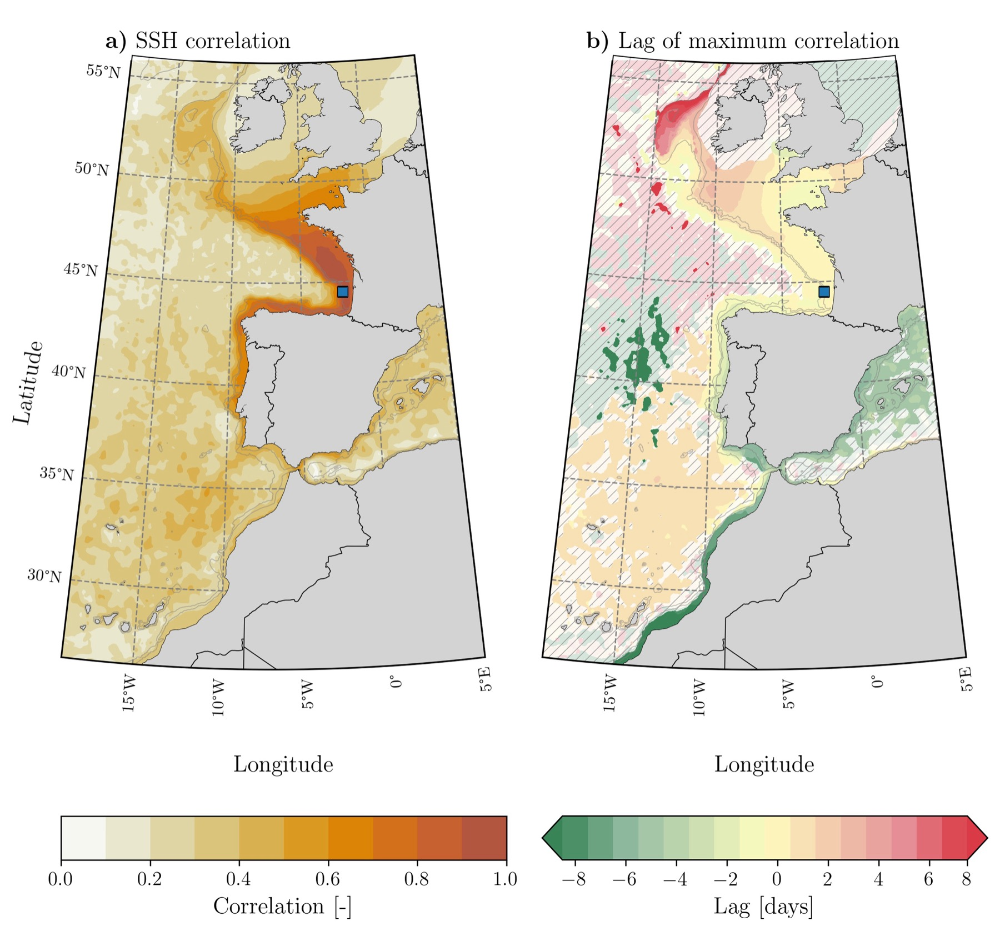

Research
Onderzoek
My research is on coastally trapped waves and on the oceanic waveguide: how the ocean's boundaries guide signals over long distances, and how processes at those boundaries connect to the ocean interior.
Mijn onderzoek gaat over kustgebonden golven en de oceanische golfgeleider: hoe de randen van de oceaan signalen over grote afstanden geleiden, en hoe processen aan die randen verbonden zijn met het binnenste van de oceaan.
Coastally trapped waves
Kustgebonden golven
The ocean is a gigantic bathtub that consists of the deep ocean, the continental shelves, and the coastal boundaries. The walls of the bathtub, the continental slopes, act as waveguides that carry signals over long distances. These signals are called coastally trapped waves, but they are unlike the waves you see on the beach. They are much longer, faster and smaller in amplitude, and have periods from several days to weeks, much like the weather systems that generate them. Upon excitation, they distribute the effects of forcing along the coast and continental slopes as they propagate along them.
De oceaan is een gigantische badkuip, die bestaat uit de diepe oceaan, de continentale platten en de kustranden. De wanden van de badkuip, de continentale hellingen, werken als golfgeleiders die signalen over grote afstanden meevoeren. Deze signalen heten kustgebonden golven (coastally trapped waves), maar ze lijken in niets op de golven die je op het strand ziet. Ze zijn veel langer, sneller en kleiner in amplitude, en hebben perioden van enkele dagen tot weken, net als de weersystemen die ze opwekken. Eenmaal opgewekt verspreiden ze de effecten van de forcering langs de kust en de continentale hellingen, terwijl ze zich daarlangs voortplanten.
Propagation
Voortplanting
Coastally trapped waves are sub-inertial: their periods are longer than the local inertial period (about 16 hours at 50°N). They owe their existence to two restoring mechanisms. Earth's rotation, together with the coastal wall and the ocean's stratification, supports Kelvin waves. The sloping bottom of the shelf and slope supports continental shelf waves, through conservation of potential vorticity. Coastally trapped waves are a hybrid of the two. They propagate in one direction only: with the coast on their right in the Northern Hemisphere, and on their left in the Southern Hemisphere. At long wavelengths they travel at speeds of a few metres per second, or several hundred kilometres per day.
Kustgebonden golven zijn sub-inertieel: hun perioden zijn langer dan de lokale inertiaalperiode (ongeveer 16 uur op 50°NB). Ze danken hun bestaan aan twee herstellende mechanismen. De draaiing van de aarde maakt, samen met de kustwand en de gelaagdheid van de oceaan, Kelvingolven mogelijk. De hellende bodem van het plat en de helling maakt, via behoud van potentiële vorticiteit, platgolven (continental shelf waves) mogelijk. Kustgebonden golven zijn een mengvorm van beide. Ze planten zich in maar één richting voort: met de kust aan hun rechterhand op het noordelijk halfrond, en aan hun linkerhand op het zuidelijk halfrond. Bij lange golflengten bewegen ze met enkele meters per seconde, oftewel enkele honderden kilometers per dag.
Modes
Modi
The wave field can be written as a sum of modes, each with its own cross-shelf and vertical structure $F_n(x,z)$ and alongshore amplitude $\phi_n(y,t)$:
Het golfveld kan worden geschreven als een som van modi, elk met een eigen structuur dwars op de kust en in de verticaal, $F_n(x,z)$, en een amplitude langs de kust, $\phi_n(y,t)$:
$$ p(x,y,z,t) = \sum_{n=1}^{\infty} F_n(x,z)\,\phi_n(y,t). $$The first mode is the fastest. Higher modes are slower and have more structure across the shelf. Stratification sets the shape of each mode. In weak stratification the modes are nearly depth-independent shelf waves. In strong stratification they become bottom-intensified and behave more like internal Kelvin waves.
De eerste modus is de snelste. Hogere modi zijn langzamer en hebben meer structuur dwars over het plat. De gelaagdheid bepaalt de vorm van elke modus. Bij zwakke gelaagdheid zijn de modi vrijwel diepte-onafhankelijke platgolven. Bij sterke gelaagdheid concentreren ze zich bij de bodem en gedragen ze zich meer als interne Kelvingolven.
Forcing
Forcering
The main driver is the alongshore wind. Wind blowing along the coast drives Ekman transport towards or away from the coast, raising or lowering sea level at the coast. Changes in atmospheric pressure also generate waves, as do signals arriving from elsewhere, such as equatorial Kelvin waves that reach an eastern boundary and continue poleward along the coast. Neglecting coupling between modes, each mode obeys a forced, damped first-order wave equation in the alongshore direction $y$ (taken positive in the direction of propagation):
De belangrijkste aandrijving is de wind langs de kust. Wind die langs de kust waait, drijft Ekmantransport naar de kust toe of ervan af, waardoor de zeespiegel aan de kust stijgt of daalt. Ook veranderingen in de luchtdruk wekken golven op, net als signalen die van elders binnenkomen, zoals equatoriale Kelvingolven die een oostrand van een oceaanbekken bereiken en langs de kust richting de pool doorlopen. Als we de koppeling tussen modi verwaarlozen, voldoet elke modus aan een geforceerde, gedempte eerste-orde golfvergelijking in de richting langs de kust, $y$ (positief in de voortplantingsrichting):
$$ \frac{1}{c_n}\frac{\partial \phi_n}{\partial t} + \frac{\partial \phi_n}{\partial y} + a_n \phi_n = b_n\,\tau^{y}, $$where $c_n$ is the phase speed of mode $n$, $a_n$ represents bottom friction, $b_n$ is a wind-coupling coefficient, and $\tau^{y}$ is the alongshore wind stress. Because the waves only travel in one direction, the response at a given location depends on the wind everywhere upstream along the coast.
waarin $c_n$ de fasesnelheid van modus $n$ is, $a_n$ de bodemwrijving voorstelt, $b_n$ een windkoppelingscoëfficiënt is en $\tau^{y}$ de windschuifspanning langs de kust. Omdat de golven maar in één richting lopen, hangt de respons op een bepaalde plek af van de wind overal stroomopwaarts langs de kust.
Impact on the western European shelf
Invloed op het West-Europese continentaal plat
Along the eastern boundary of the North Atlantic, coastally trapped waves travel poleward: from the Iberian Peninsula, along the Bay of Biscay and the shelf west of the British Isles, towards Norway. In a recent preprint, we diagnose these waves in a high-resolution (1/36°) regional ocean reanalysis.
Langs de oostrand van de Noord-Atlantische Oceaan lopen kustgebonden golven richting de pool: van het Iberisch Schiereiland, langs de Golf van Biskaje en het plat ten westen van de Britse Eilanden, naar Noorwegen. In een recente preprint brengen we deze golven in kaart in een regionale oceaanreanalyse met hoge resolutie (1/36°).
